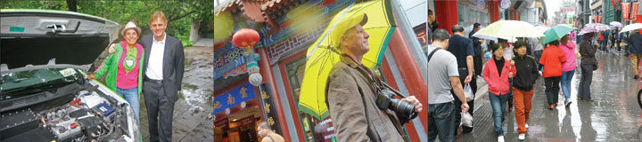
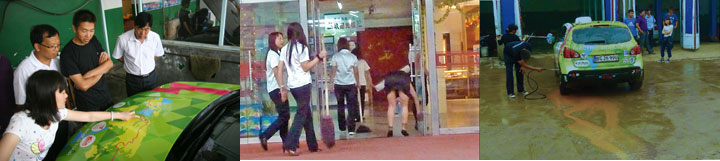
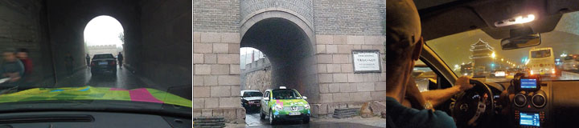
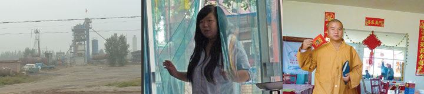
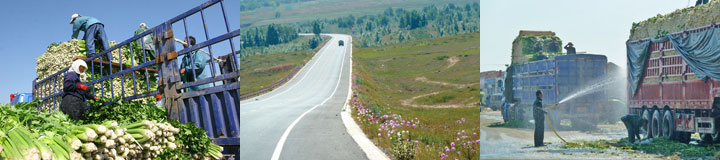
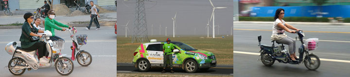
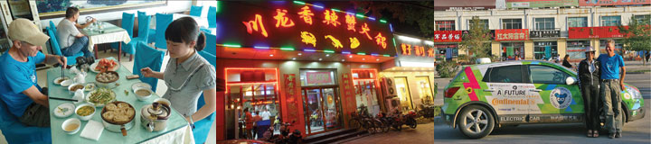
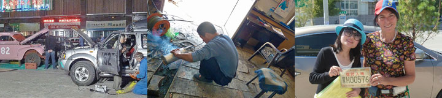
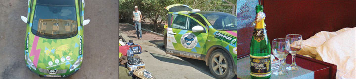

Green Car was left parked in the narrow street by the hotel. We took a taxi to a restaurant where we had a delicious Schezhuan lunch with Simon from Denmark and his Chinese wife. Afterwards we took a slow walk enjoying our first Beijing sunshine to a shop where Simon sold postcard-copies of old China-photos. We were in a tourist-area close to the tall Drum Tower from where the drummers since the 15th century have signaled night-fall and the closing of the city-gates. From the Drum Tower we walked homewards through the Forbidden City until it got dark and our feet were worn down.
Nina

We left the hotel two hours early in pouring rain. With help from Serena's GPS we arrived at the Danish embassy in time in spite of morning rush-hour. We parked Green Car in the embassy and a journalist from the best net-media in Beijing made an interview with us. The ambassador Mr. Friis and Henrik the environmental counsellor admired Green Car, which gave a little show. We all agreed that electric cars have a great future in China - and the world. I think electric cars can solve some of the pollution but not the congestion of the streets. When the five ring-roads of Beijing already have twenty lanes what do you do then? If you enlarge all roads to 40 lanes there will be room for more cars and fewer homes. If you enlarge to 80 lanes you will soon run out of space for living.
Nina
I, Green Car, have not had a proper bath since Russia. Nina and Hjalte immediately took a bath when they arrived to China after eight days without a bath in the Gobi. I, on the other hand, had to wait until this morning, when they finally found a car-wash. Five people hosed me. soaped me, sprayed me, vacuum-cleaned me and polished me. After the first bath they told me I better had one more. In the end I basked in the admiring glances, even if it started raining. Now I smile to every cleaner I see. I had collected so much mud from Mongolia that I left a small mountain and a lake in the car-wash when I drove away.
All the best from Green Car
The weather was grey and foggy from the morning and it only got worse during the day. At lunch time it was almost dark. Whether the darkness was due to heavy clouds or pollution could not be determined. As we got closer to Beijing all roads was blocked by traffic jam. We were lucky to be ordered unto the old road across the Badaling mountains. In spite of rain and fog we sensed the beauty of the mountains - and suddenly we were driving through the Great Wall. Five hours after passing the city limit of Beijing we reached the Tian-anmen square. And it was raining even harder when we got the wires hooked up and started charging Green Car in front of a small hotel in an old neighborhood close to the square - and 12.000 km from Copenhagen.
Nina
All the time there is something new to see as we drive along a provincial road through Hebei. Then fields of grapes, then a cement-factory, a mountain or a gigantic steel-mill. Tucked in between we see poor village houses and small workshops. Nowhere pristine nature. Everywhere man has dug, built and polluted. Mountains of coal transported from Mongolia are being sorted and sold by black-faced men. The road is terribly worn by the heavy coal trucks. We pass more steel-mills and trees and air are grey. Lots of brightly colored flags adorn the factories, even the coal-heaps, but they cannot clean the air.
No express-ways, thank you. We prefer the small provincial roads, but in China they are often new four-lane roads. We roll through the semi-desert past villages, brick-factories and lots of windmills. We have to stop and snap a photo of Green Car in front of the Danish-Chinese windmills. Suddenly we are out of the Gobi and the land rise in green hills. When we stop for tea we find ourselves in the middle of the celery- trade. The vegetable arrives on small tractors from the fields nearby and gets loaded unto big trucks. Every celery is stacked carefully and sprayed with water. With care and hard work the farmers make sure the vegetables will reach Beijing fresh and tasty. They even seem to have fun. Or is it us, the long-noses, that they laugh at?
Nina
Small electric bikes are everywhere in the towns. Many parents drive their kids to school on them. Everyone knows an electric vehicle needs to be charged. People are very friendly and it is always easy to get power for Green Car. However a man was worried how much electricity a whole car would need. Serena, our Chinese guide, explained that is just because Green Car eats slowly that it charges all night long. The Chinese are very interested in Green Car. They suffer from pollution in the big cities and they are more than ready for electric cars. As soon as they can be mass-produced and charging is available the Chinese will go electric in the big way - I predict that China will be the first real electric-car-country.
Nina
Here in the most remote provincial town in Inner Mongolia we have had sumptuous meals. Today our guide Serena ordered a hot-pot, a kind of soup that boils on the table. In the pot I discovered giant shrimps, celery, peanuts, beans, ginger, chili, rice-noodles, garlic, coriander. Halfway through the meal more broth was added to the pot. Now we dumped in fresh seaweed, mushrooms, green salad, rucola and tofu-noodles. We fished for our personal favorites with our chop sticks. We got so full that at night all we could eat was nuts, fruit and a bit of a moon-cake.
Nina
Eight o'clock in the morning we checked out of Mongolia hoping for the best and not knowing what to expect on the Chinese side. A policeman in body-armor and white gloves told us to wait. A moment later our Chinese guide Serena greeted us. 23 years old and full of energy she had everything ready for us and we were in China in less than an hour! We got rooms at a luxury hotel in Erenhot where Green Car had to wait for the final customs-papers. We took a taxi into town and found two new tires for Green Car. Next door was a small workshop where the muffler for the generator was fixed. On the way back we stopped at an optician and got new glasses for Hjalte and me, made on the spot. Finally I found someone to do our laundry. Serena gave us our Chinese driver's licenses and the very important Chinese license-plate for the car. We were totally overwhelmed by Chinese service. Hjalte rearranged the stuff in the car to make room for Serena while workers from the hotel performed a noisy military drill. In the evening we took a walk in this hot desert town and saw the beautiful old cars from the Beijing-Paris Rally being repaired and made ready for the next stage: Mongolia. We wished them good luck!
Nina
As electric car world-travelers we participated through our satellite-terminal in the opening of GreenPark, a foliage-covered car-park in Rotterdam. Fresh from the bath and in our best Hummel-outfit we sat in the car with the computer in front of us and congratulated the good green initiative. We heard and saw Christian Stadil and Princess Alexandra talk. And when the guests toasted in champagne we also had glasses and a bottle of champagne ready in Green Car. Green Car got power from our hotel-room on 4th floor until the plug melted and we had to stop. It was our last night in Zamin Uud.
Nina